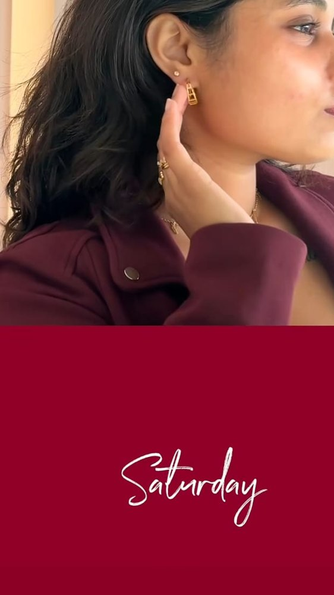
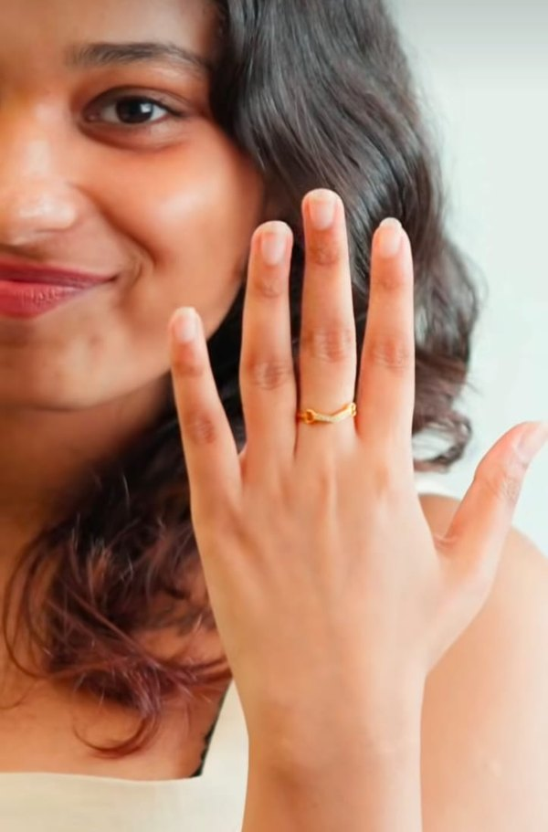
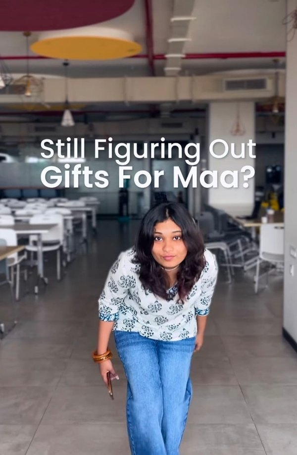

Six months of growing an already big account.
See @shayagrams ↗Greatest hits
Tap through like a story. Each one shows the goal, how the post got there and what it did.
All tracks
Each one made for a different goalTwo tracks, two jobs
Reach and growth are different songs. Some posts are made to be seen by everyone, some to make the right people stay. Knowing which one a brand needs this month is the job.
Read something from Shaya lately? That was me.
The words around whole collections, the captions that launched them, and the name and description on the product you almost added to cart. If Shaya said it on the website, in the app, in your inbox or WhatsApp, or on a card in a store, there’s a good chance I wrote it.
Collections I wrote for
Three launches, one line from each.
Written for the website, app, CRM and store.
Discography
Campaigns, collections and the work in between. Open one to see its tracks.
Featuring Srishti
Some briefs needed a face, so I stepped in front of the camera too.



Hi, I’m Srishti.
I’ve always been curious about why one brand stays with you and another doesn’t. What someone is really reaching for when they pick something up, and how it feels to hold it.
I’m a brand and content marketer in Mumbai, with two years across jewellery retail and agetech. My favourite part of the job comes before the post: understanding how someone thinks, then building the words and visuals that meet them there.
On tour
Every stop so far, newest first.
Runs @shayagrams end to end. Campaign concepts and copy across social, website, app, CRM and retail.
Jury and partnerships for 50 Above 50, testimonials with 40+ leaders, production and YouTube growth.
Google Business listings and content gap analysis. Local visibility up 35%.
SEO audits and on-page content. Organic traffic up 30%.
Where the curiosity about brands and people started.
Pick your plan.
Tell me what you’re building and what you want from your brand and socials. I’ll come back with how I’d approach it.